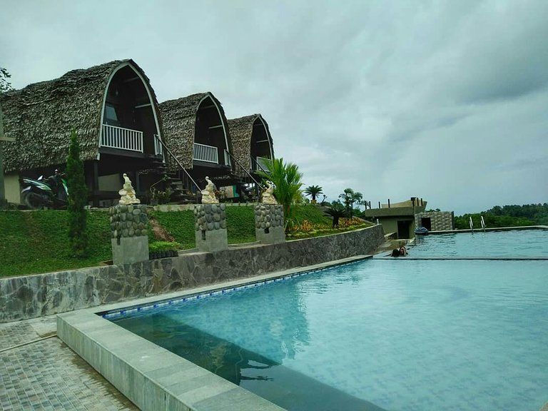
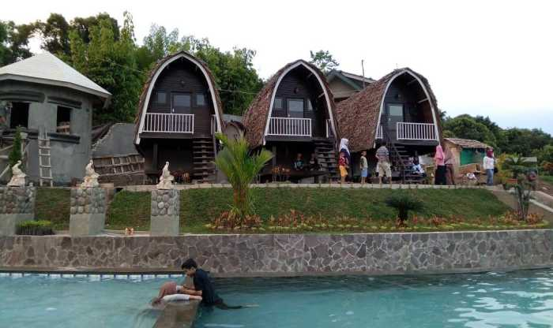

|  | Bukit Kambo adalah tempat wisata jenis water park yang baru berdiri di Palopo. Sebuah destinasi wisata taman air buatan yang didesain sangat cantik dan menarik. Maka dari itu, pihak pengelola yakin kalau Bukit Kambo akan menjadi wisata hits. Yang menarik dari Bukit Kambo tidak hanya desain destinasi-nya saja. Pemandangan alam yang disuguhkan juga sangat indah dan instagramable. Apalagi tempat wisata yang juga disebut Kambo Highland Park Palopo ini berlatar pegunungan. Selain udara yang bersih dan angin yang sejuk, pengunjung juga bisa melihat kota Palopo dari Ketinggian. Tentu suasana ini begitu mengasyikkan apalagi jika traveler menikmatinya sembari berenang di kolam-kolam yang berair jernih dan dingin. Bukit Kambo berada di Sulawesi Selatan tepatnya beralamat di Desa Kambo, Kecamatan Mungkajang, Kabupaten/Kota Palopo Sulsel. Lokasi yang cukup dekat dari Kota Palopo dan hanya membutuhkan durasi perjalanan selama 20 menit saja.  Untuk sampai ke Bukit Kambo silakan dilihat papan nama yang ada di pinggir jalan. Bisa juga dengan bertanya pada masyarakat sekitar atau menggunakan layanan GPS online. Pasti pengunjung sampai ke tempat wisata tersebut tanpa tersesat Untuk memasuki tempat wisata Bukit Kambo pengunjung harus membayar tiket seharga Rp35.000 per-orang. Sedangkan kalau mau menginap boleh menyewa villa dengan harga Rp750.000 per-malam. Inilah penjelasan singkat tentang tempat wisata ngehits di Kota Palopo. Silakan datangi pada waktu senggang atau saat libur panjang. Dijamin pasti memuaskan dan tidak ingin cepat meninggalkan tempat wisata. |